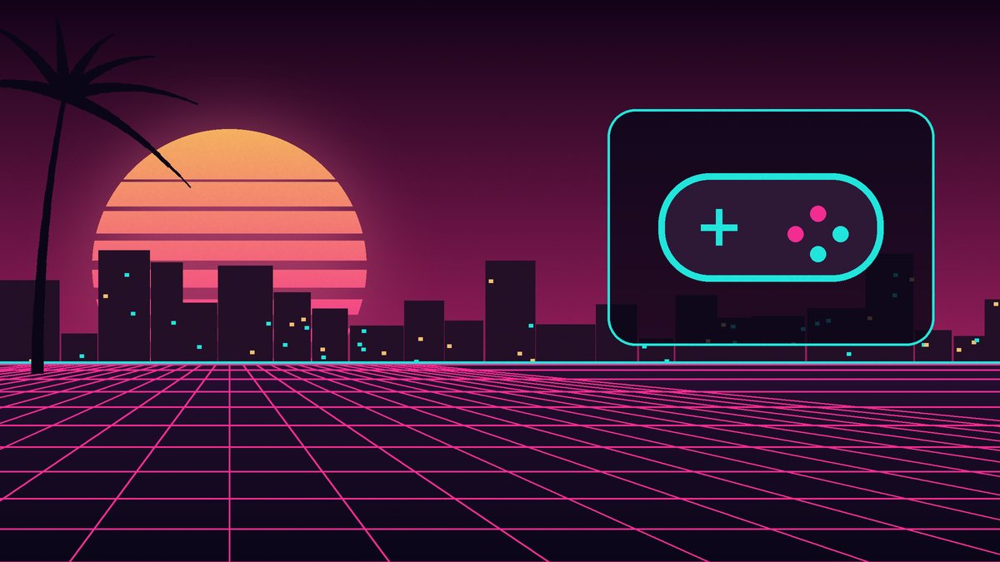

Siete sitios donde GTA 6 te regala un arma única, lanzacohetes incluido
Por el mapa de Leonida hay variantes únicas de armas en cabañas, barcos encallados y búnkeres, sin misión y sin pagar un dólar. Estas son las siete que coinciden en varias guías, con el sitio exacto, lo que hay que hacer en cada una y los tres códigos del puesto de Pelican Valley.
Por Redacción Golpe Diario · Publicado el

Qué ha pasado
Dos cosas antes de salir. GTABoom recuerda que, una vez la coges, el arma es tuya para siempre y que el arsenal es común para Jason y Lucia, así que no hay que repetir el viaje con el otro personaje. Y son variantes: el arma de base es la misma con otro acabado, y alguna ni se puede tocar en el taller, como la escopeta Unpacked Comshot 12, según GTABase.
El lanzacohetes está en Balsero. Enfrente del Griffin Shooting Range hay un recinto vallado con una autocaravana llena de antenas y, debajo, un búnker. KeenGamer explica que se abre la trampilla del suelo de la cocina y se baja por una escalera, y que el sitio no está disponible hasta terminar «Building a Life», del capítulo 1. Abajo están el lanzacohetes Hauners H-AT y la pistola ametralladora Conspiracist Type 9; Detonated añade granadas, adrenalina y munición. GTABoom lo sitúa en Mariana County.
La cabaña del pantano, dos armas y ni un disparo. KeenGamer coloca en Pelican Valley una cabaña en ruinas con el revólver Swamp Bait Akulus en el suelo y el rifle Cruel Huntsman's SM-69 en el porche de atrás. No hay enemigos dentro, pero sí caimanes por la zona, y GTABoom describe el mismo punto como un par de casetas con una plataforma de madera al lado.
El puesto de investigación de Pelican Valley, con tres códigos. Es el único de la lista que tiene puzle. KeenGamer lo detalla así: primero se da la corriente en la caja eléctrica, luego se entra en el ordenador con la contraseña CLEAVES, después se abre la caja fuerte con el 0072 y por último la puerta del muelle con el 0212. El premio es el arma Crabshack VF5, y de propina una escapada con un cangrejo gigante detrás. GTABoom da los mismos códigos.
Los dos barcos de los Permit Keys. En la isla del sureste hay un barco encallado al que se sube para abrir una trampilla de la cubierta: dentro está la pistola Assassin Nipper .38. KeenGamer lo llama «Derelict Spy Vessel» y GTABoom lo sitúa al oeste de Maroon Key. En la isla más al norte, al lado de una barca abandonada y tumbada, está la escopeta Smuggler Gorse 425, en la arena pegada al casco. En ninguno de los dos hay que pelear.
El campamento de pesca de Wetman Bay, el único con tiroteo. KeenGamer recomienda llegar en barco, limpiar a los de la banda y abrir el maletín del edificio de la orilla para coger el rifle Kingfishers W-22. Detonated dice que además se recogen unos 2.000 dólares. Ojo con la zona: Beebom coloca un rifle de ese mismo nombre en un complejo de los Kingfishers en Grassrivers, así que si en Wetman Bay no lo encuentras, prueba allí.
La casa de pilotes de Key Lento. GTABase sitúa la escopeta Unpacked Comshot 12 en una casa de la costa noroeste de Key Lento, cerca del Mini Mart: se suben las escaleras de fuera, se fuerza la entrada de la planta de arriba y el arma está apoyada en la pared del baño del dormitorio del fondo, detrás de la puerta. Estás allanando una casa, así que puede saltar la alarma y aparecer la policía. KeenGamer la recomienda como primera parada de la ruta.
Qué significa para ti
- Empieza por Key Lento y por la cabaña de Pelican Valley: no hay que pelear ni terminar ninguna misión.
- El búnker de Balsero no se abre hasta acabar «Building a Life», en el capítulo 1, según KeenGamer: no hagas el viaje antes.
- Apunta los tres códigos del puesto de Pelican Valley antes de ir: CLEAVES en el ordenador, 0072 en la caja fuerte y 0212 en la puerta del muelle.
- Lo que recoja Jason lo tiene Lucia y al revés, así que cada sitio se visita una sola vez.
- En Key Lento deja el coche o la moto a mano: la alarma de la casa puede llamar a la policía.
Lo tienes también en la guía: Primeros pasos en GTA 6: lo que conviene saber antes de empezar · Cómo ganar dinero en GTA 6 · Armas de GTA 6: las únicas, dónde conseguirlas y en qué orden · Armas de GTA 6: las únicas, dónde conseguirlas y en qué orden · Armas de GTA 6: las únicas, dónde conseguirlas y en qué orden · Trucos y consejos para el modo historia de GTA 6
Contrastado con: GTABoom · KeenGamer · games.gg · Detonated · GTABase · Beebom
Sigue leyendo
La caja fuerte de Chatfield Storage se abre con 5800, y hay más códigos que no piden pista
En Waxman Island hay un almacén con una caja fuerte, una pistola única y un superdeportivo morado. El código es 5800, y no es el único candado de Leonida que se abre sin tener que buscar la combinación.
El asalto al furgón blindado con Billy: 2.000 dólares, la moto y el camino exacto de huida
Billy, el de las carreras de motos del Thrillbilly Mud Club, te escribe unas horas después de su carrera para reventar un furgón blindado. La misión es opcional, cuenta para el 100 % y paga 2.000 dólares, aparte de la moto de cross con la que vas al golpe.
Cómo usar bien el Focus en GTA 6: cámara lenta, botín marcado y disparar sin matar
El Focus es la habilidad que más cambia un atraco en GTA 6, y el juego apenas la explica. Se activa pulsando los dos joysticks, fuera del combate no gasta barra y, apuntando, te dice en qué parte del cuerpo disparar para dejar a alguien fuera de juego sin matarlo.